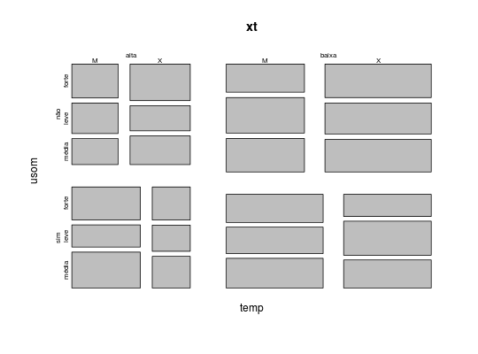
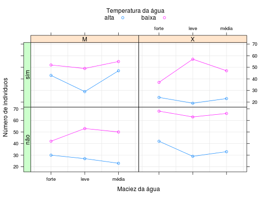

Dados resultantes de uma pesquisa em que 1008 pessoas
receberam duas marcas de detergente, X e M, e
posteriormente responderam a perguntas sobre a temperatura da
água, uso anterior do detergente M, detergente de
preferência e maciez da água.
Um data.frame com 24 observações e 5 variáveis.
tempalta e baixa).usomM
(sim ou não).preferM ou
X).maciezforte, codeleve e média).nindtemp, usom, prefer e
maciez.PAULA (2004), Exercício 4.6.17, pág. 347.
Bishop, Y. M. M., Fienberg, S. E., Holland, P. W. (1975). Discrete Multivariate Analysis: Theory and Practice. MIT Press, Cambridge.
data(PaulaEx4.6.17)#> Warning: data set ‘PaulaEx4.6.17’ not foundstr(PaulaEx4.6.17)#> 'data.frame': 24 obs. of 5 variables: #> $ temp : Factor w/ 2 levels "alta","baixa": 1 1 1 1 1 1 1 1 1 1 ... #> $ usom : Factor w/ 2 levels "não","sim": 2 2 2 2 2 2 1 1 1 1 ... #> $ prefer: Factor w/ 2 levels "M","X": 2 2 2 1 1 1 2 2 2 1 ... #> $ maciez: Factor w/ 3 levels "forte","leve",..: 2 3 1 2 3 1 2 3 1 2 ... #> $ nind : int 19 23 24 29 47 43 29 33 42 27 ...xt <- xtabs(nind ~ ., data = PaulaEx4.6.17) ftable(xt)#> maciez forte leve média #> temp usom prefer #> alta não M 30 27 23 #> X 42 29 33 #> sim M 43 29 47 #> X 24 19 23 #> baixa não M 42 53 50 #> X 68 63 66 #> sim M 52 49 55 #> X 37 57 47plot(xt)library(latticeExtra) useOuterStrips( xyplot(nind ~ maciez | prefer + usom, groups = temp, data = PaulaEx4.6.17, type = c("p", "g", "a"), xlab = "Maciez da água", ylab = "Número de indivíduos", auto.key = list(cex.title = 1, columns = 2, title = "Temperatura da água")) )